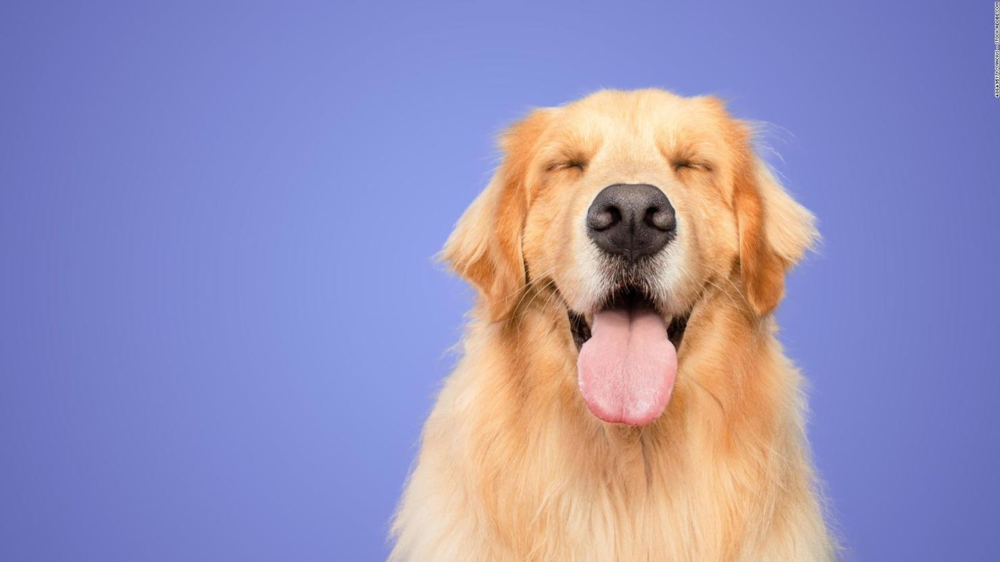
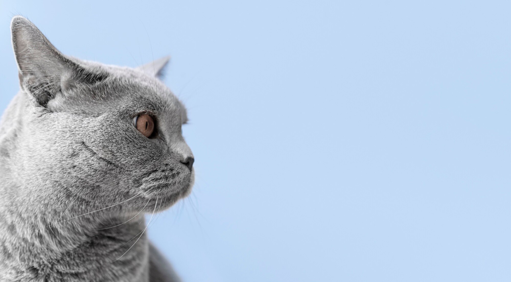
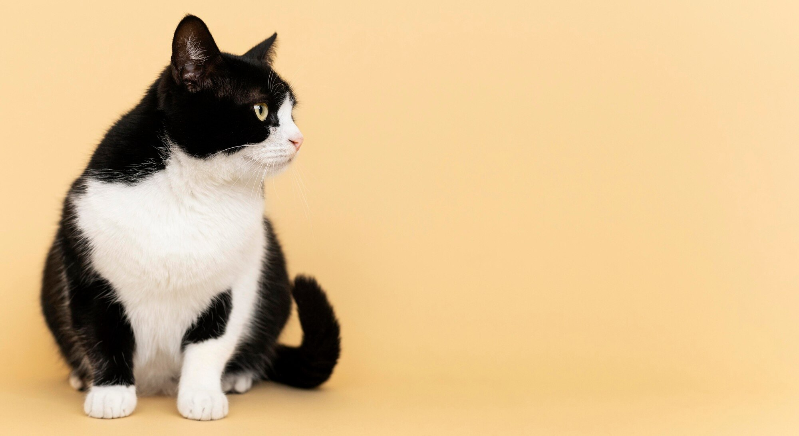
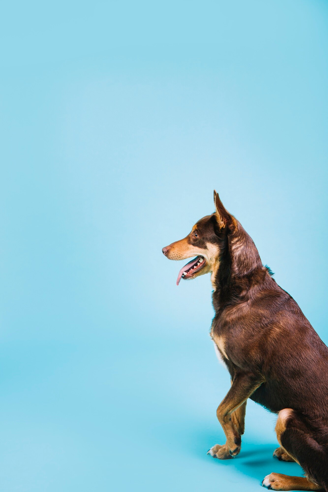
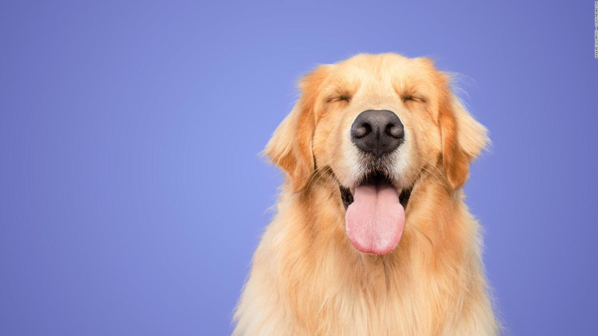
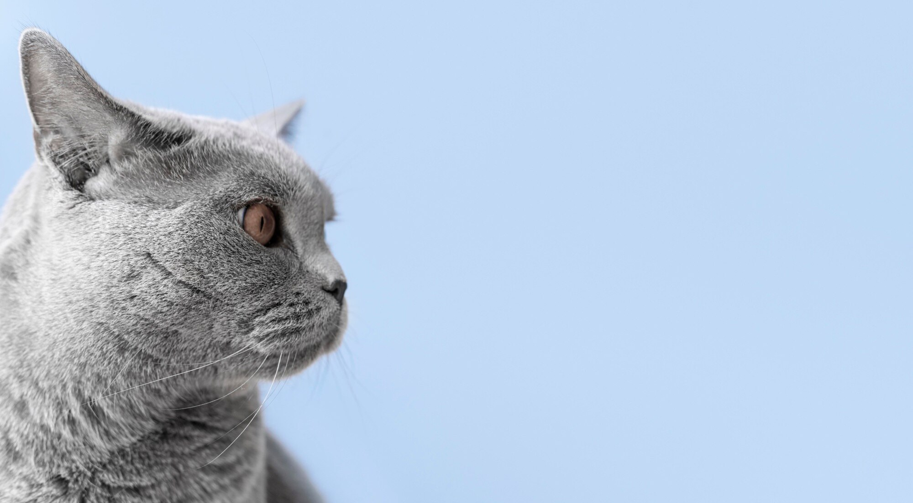
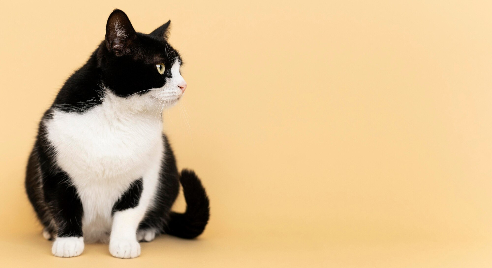
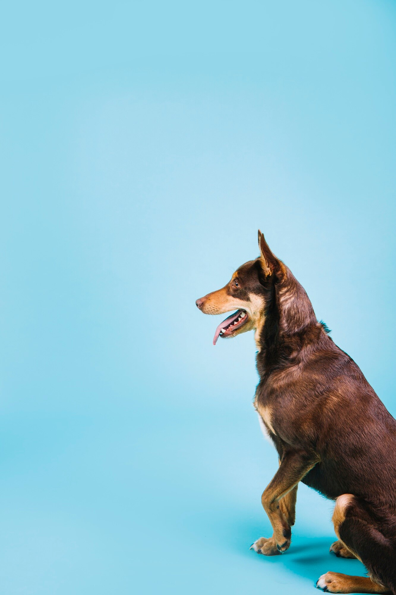
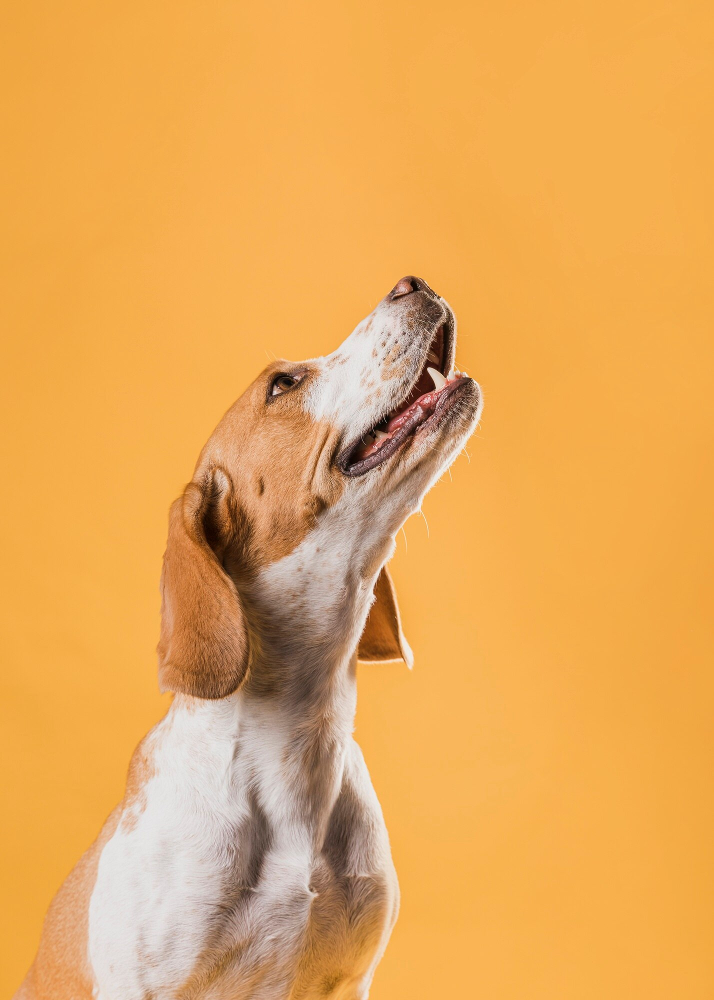
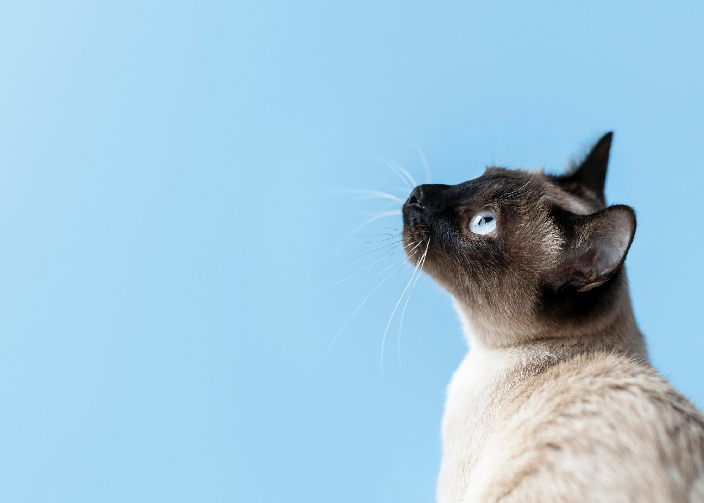

Encuentra a tu compañero ideal
 







En Mundo Mascota creemos que cada mascota es única y merece un hogar lleno de amor y cuidados especiales.
Nuestro equipo de expertos se dedica a brindarte toda la información necesaria para tomar las mejores decisiones en el cuidado y bienestar de tus amigos peludos.
Mascotas Destacadas

Beto
Beto es un perro muy tierno y cariñoso.

Milu
Milu es una gatina muy amigable y juguetona.
Perritos en Adopción
Haz clic en el botón para conocer a un perrito en adopción
Gatitos en Adopción
Haz clic en el botón para conocer a un gatito en adopción